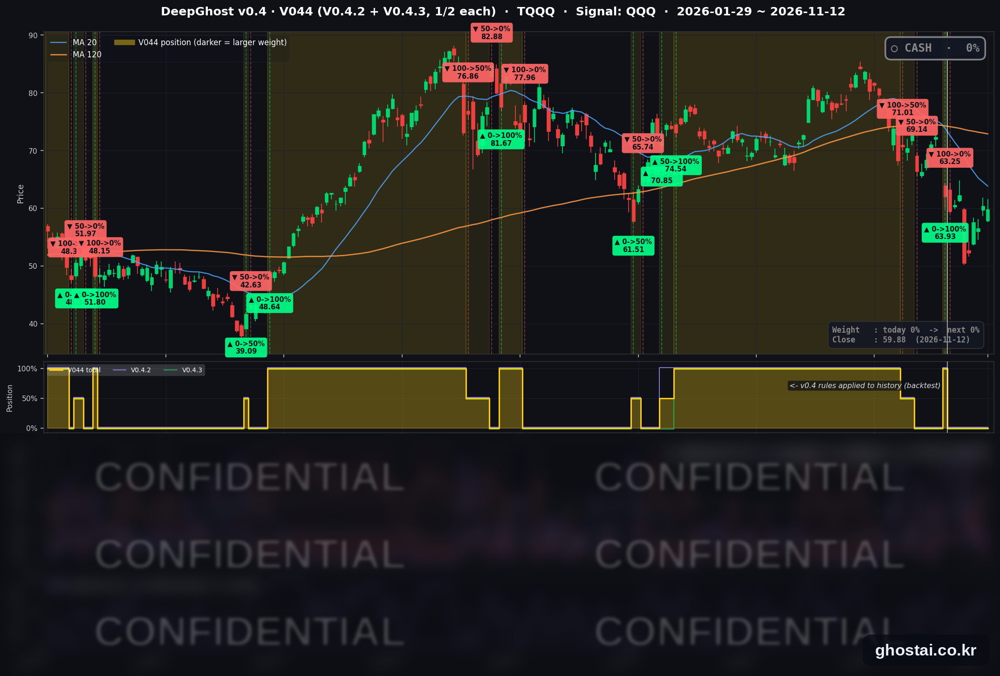

젠슨 황 사임, 10년물 금리 5.1%, 나스닥 0.39% 하락
· Ghost.AI 데일리 리포트
👻 매일 시그널과 히스토리를 홈페이지에서 한눈에 → www.ghostai.co.kr
회원 페이지 안내 — 회원 가입하시면 공식 전략 v0.4의 TQQQ 비중과 판단 근거, 원본 차트, 분석 레포트를 매일 확인하실 수 있습니다. 회원 페이지는 블로그·유튜브보다 먼저 업데이트됩니다. 지금 베타 회원을 받고 있으며, 이메일과 필명만으로 가입하실 수 있고 서비스 사용료는 받지 않습니다. 이메일 확인 후 바로 이용하실 수 있습니다.
젠슨 황 엔비디아 CEO 가 사임하면서 엔비디아는 13.09% 낮게 출발했고, 나스닥도 1.47% 낮게 시작했습니다. 기술주가 장중에 낙폭을 대부분 줄여 나스닥은 0.39% 하락으로 마감했지만, 휴장 뒤 다시 열린 채권시장에서 10년물 금리가 5.103% 로 올랐고 유가도 뛰었습니다. S&P 500 구성종목 493개 중 369개가 내렸습니다. TQQQ 는 0.93% 내렸고, 전략은 현금 보유 중입니다.
📊 오늘의 매매 신호
| 항목 | 내용 |
|---|---|
| 오늘의 신호 | 🟡 신규 신호 없음 — 전략은 현금 보유를 유지합니다 |
| 포지션 상태 | 💵 현금 보유 중 (OUT OF POSITION) |
| 현금 보유 기간 | 2026-11-02 ~ 2026-11-12 (9거래일, 11월 2일 시가 매도 후) |
| TQQQ 종가 | $59.88(-0.93%) |
TQQQ 시그널 — OUT OF POSITION
현재 상태: 현금 보유 중 | 11월 2일 시가 $63.25 매도 · 11월 2일 이후 전략 수익률 +2.00%

전략은 11월 2일(월) 시가 63.25달러에 TQQQ 를 매도한 뒤 현금 보유 중이고, 11월 12일에도 새 신호는 나오지 않았습니다. TQQQ 는 4.38% 낮게 출발한 뒤 장중에 낙폭을 줄여 0.93% 내린 59.88달러로 마감했습니다.
오늘 미국 시장 — 시황 요약
지수 마감
| 지수 | 종가 | 등락률 |
|---|---|---|
| S&P 500 | 7,592.40 | -0.35% |
| 나스닥 종합 | 25,366.09 | -0.39% |
| 다우존스 | 52,297.09 | -0.36% |
| 러셀 2000 (IWM) | 278.44 | -1.64% |
| QQQ (나스닥100) | 688.17 | -0.32% |
| 반도체 ETF (SOXX) | 154.99 | -0.26% |
| TQQQ | 59.88 | -0.93% |
나스닥은 시가 기준 1.47% 낮게 출발했는데, 10월 30일 이후 가장 큰 하락 출발입니다. 이후 1.09% 올라 낙폭을 대부분 줄였습니다. 반면 S&P 500 중간 종목은 시가 이후 1.02% 내렸습니다. 지수 하락이 작았던 것은 기술주가 장중에 반등했기 때문이고, 나머지 종목 대부분은 장중에 더 내렸습니다.
IWM 은 1.64% 내려 200일선 아래(0.32%)로 마감했습니다. 200일선 아래 마감은 11월 6일 이후 처음입니다. 10월 6일 최고 종가와 비교하면 S&P 500 은 2.90%, 나스닥은 8.09% 낮습니다.
국채 금리 동향
11월 11일은 재향군인의 날로 채권시장이 휴장해, 아래 변동은 마지막 정상 거래일인 11월 10일 대비입니다.
| 만기 | 11/10 종가 | 11/12 종가 | 변동 |
|---|---|---|---|
| 3개월 | 4.115% | 4.128% | +1.3bp |
| 5년 | 4.807% | 4.945% | +13.8bp |
| 10년 | 4.983% | 5.103% | +12.0bp |
| 30년 | 5.350% | 5.433% | +8.3bp |
10년물 5.103% 는 10월 21일 이후 가장 높은 종가이고, 5% 위 마감은 10월 28일 이후 처음입니다. 미 재무부 기준 2년물은 4.86% 로 11월 10일(4.73%)보다 13bp 올랐습니다. 2~5년 구간이 가장 많이 오른 것은 12월 금리 인상과 그 이후 추가 인상을 더 높게 반영한 움직임입니다. 3개월물은 거의 움직이지 않았습니다. 10년-3개월 스프레드는 97.5bp 로 11월 10일(86.8bp)보다 넓어졌고 역전은 없습니다.
연준 발언 & 금리 패스
- 해먹 클리블랜드 연은 총재 (11월 12일, 로이터 보도): 인플레이션 심리가 굳어지기 전에 물가를 2% 로 되돌리려면 긴축적인 정책이 필요하다며 추가 인상을 다시 지지했습니다. 다만 급격한 인상보다 점진적 인상이 경제에 덜 부담된다고 했고, 12월 회의에는 "열린 마음"으로 임하겠다고 했습니다. AI 데이터센터 투자가 물가 압력을 키우고 있다는 언급도 있었습니다. 매파적이지만 0.5%p 인상에는 선을 그은 발언입니다.
- 이번 주 앞선 발언: 월러 이사(11월 10일)는 12월 인상 가능성이 높다고 보고, 10월 근원 소비자물가가 0.3% 이상이면 0.5%p 인상을 검토해야 한다고 했습니다. 발표치는 0.3% 였습니다.
- 금리 경로: 기준금리는 3.75~4.00% 이고 다음 회의는 12월 8~9일입니다. 12월 인상은 기본 시나리오이고 쟁점은 폭입니다. 해먹 총재 발언에도 2년물이 13bp 오른 것을 보면, 채권시장은 인상 경로 전체를 더 높게 반영했습니다.
오늘의 핵심 이슈
- 젠슨 황 엔비디아 CEO 가 사임했습니다. 엔비디아는 황 CEO 가 CEO·이사직에서 즉시 물러나고 콜레트 크레스 최고재무책임자(CFO)가 임시 CEO 를 맡는다고 발표했습니다. 하비 존스 이사가 회사 첫 이사회 의장을 맡고, 이사회는 내부·외부 후보 중에서 후임을 찾습니다. CNBC 보도에 따르면 이사회는 11일 밤 사내 관계에 관한 두 번째 보도가 나온 뒤 이 결정을 내렸습니다. 엔비디아는 13.09% 낮게 출발했는데, 2024년 8월 5일 이후 가장 큰 하락 출발입니다. 장중에 낙폭을 줄여 4.34% 내린 166.19달러로 마감했고, 3월 30일 이후 가장 낮은 종가입니다. 3분기 실적은 예정대로 11월 17일에 나옵니다.
- 경쟁 반도체주는 올랐습니다. 같은 날 AMD 는 5.86%, 브로드컴은 5.54% 올랐습니다. 회사 자체 소식 없이 엔비디아 경쟁사로 매수가 몰렸다는 해석입니다. 블룸버그가 미국 정부의 수출 우회 조사를 보도한 슈퍼마이크로는 11.30% 내렸습니다.
- 금리 5% 재돌파와 유가 상승에 종목 대부분이 내렸습니다. 트럼프 대통령이 장 시작 전 "이란과 합의할 필요가 없다"고 올린 뒤 WTI 와 브렌트유가 2.5~3.2% 올랐습니다. 업종별로는 에너지(+1.33%)만 올랐고 커뮤니케이션 서비스(-1.88%)·경기소비재(-1.52%)·소재(-1.26%)가 가장 많이 내렸습니다. 유가 부담에 유나이티드항공(-6.02%)·델타항공(-5.22%)도 내렸습니다. 주간 신규 실업수당 청구는 20만 건으로 예상(19.5만 건)보다 많았습니다.
변동성 & 투자심리
VIX 는 6.92% 오른 18.70 으로 마감해 11월 5일(28.18) 이후 4거래일 연속 하락을 멈췄습니다. 공포탐욕 지수는 40(공포)으로 전일 37, 1주 전 20(극단적 공포), 1개월 전 45(중립)입니다(feargreedmeter.com 표시값, 참고용). 엔비디아 충격은 장중에 상당 부분 줄었지만 금리 5% 복귀와 유가 상승으로 종목 대부분이 내렸고, 시장 분위기는 중립에서 조금 약해졌습니다.
매크로 & 원자재
| 품목 | 종가 | 등락률 | 11/3 대비 |
|---|---|---|---|
| WTI 선물 | $88.70 | +2.51% | -7.69% |
| 브렌트 선물 | $95.77 | +3.24% | -7.56% |
| 원유 ETF (USO) | $146.07 | +3.25% | -7.65% |
| 금 선물 | $3,881.70 | -2.97% | -1.49% |
| 금 ETF (GLD) | $354.89 | -2.82% | -1.22% |
USO 상승률은 10월 23일 이후 가장 큽니다. 금은 3일 연속 내렸고, 금 선물 종가는 2025년 10월 2일 이후 가장 낮습니다.
주요 종목 동향
| 종목 | 종가 | 등락률 | 비고 |
|---|---|---|---|
| AVGO | 364.36 | +5.54% | 엔비디아 경쟁사로 매수 |
| GOOGL | 298.70 | +1.79% | 커뮤니케이션 서비스 19종목 중 상승 2종목(GOOGL·GOOG) |
| TSLA | 397.45 | +1.69% | 시가 이후 +3.01% |
| AMZN | 267.44 | +0.48% | |
| MSFT | 523.00 | +0.36% | 이틀 하락 뒤 반등 |
| QCOM | 177.14 | +0.32% | |
| AAPL | 354.88 | -0.21% | 장중 359.37달러 사상 최고가 |
| META | 623.61 | -0.82% | |
| MU | 798.44 | -1.59% | 시가 -5.18% 에서 낙폭 축소 |
| INTC | 61.20 | -2.08% | 시가 -4.54% 에서 낙폭 축소 |
| NFLX | 62.69 | -2.87% | |
| NVDA | 166.19 | -4.34% | CEO 사임, 시가 -13.09% |
커버리지 12종목 중 6종목이 올랐습니다. 엔비디아·마이크론·인텔은 시가에 크게 내린 뒤 장중에 낙폭을 줄였습니다. 장 마감 뒤 시스코는 1분기(회계연도 2027) 매출 185억 달러, 조정 주당순이익 1.40달러로 예상을 넘었고 시간외 거래에서 올랐습니다.
다음 일정 (미 동부시간)
- 11/13(금) 08:30 10월 PPI / 10:50 보먼 부의장 대담 / 19:00 제퍼슨 부의장 연설
- 11/16(월) 05:00 바 이사 연설 / 12:00 워시 의장 개회사
- 11/17(화) 08:30 수출입물가 / 09:10 월러 이사 연설 / 09:15 산업생산 / 엔비디아 3분기 실적(장 마감 뒤)
- 11/18(수) 14:00 10월 FOMC 의사록
- 11/20(금) 월간 옵션 만기
- 12/4(금) 08:30 11월 고용보고서
- 12/8~12/9 FOMC
Ghost.AI — Quantitative AI Investment
Model: DeepGhost v0.4 | Transformer-Based Deep Learning
Coverage: 14 tickers | Updated every trading day after US market close
⚠️ 본 자료는 정보 제공 목적으로만 작성되었으며 투자 권유가 아닙니다. 모든 투자의 책임은 투자자 본인에게 있습니다. 과거 성과가 미래 수익을 보장하지 않습니다.
[유의사항]
- 본 서비스는 불특정 다수를 대상으로 발행되는 단방향 정보 제공 서비스이며, 투자자 개인의 재산 상황·투자 목적·위험 선호도를 반영한 개별 투자 조언이 아닙니다.
- 고스트에이아이 주식회사는 고객과 쌍방향 의사소통(개별 상담, 맞춤형 자문 등)을 제공하지 않습니다.
- 본 콘텐츠는 투자 권유 또는 매매 주문의 청약·청약의 권유에 해당하지 않으며, 최종 투자 판단 및 그에 따른 손익의 책임은 전적으로 투자자 본인에게 있습니다.
고스트에이아이 주식회사